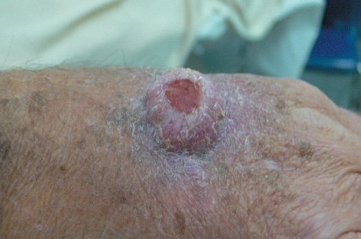

Immunosuppression
Summary
- The goal of immunosuppression is to inhibit the immune response to alloantigen while preserving the immune response to infection and malignancy [1].
- That balance is never fully achieved, which is why the complications of immunosuppression (opportunistic infection, skin cancer and post-transplant lymphoproliferative disorder) are as much a part of transplant practice as rejection itself. Skin cancer is the commonest malignancy following any transplant, squamous cell carcinoma most of all [2].
- This page covers the drug classes and their mechanisms, the toxicity that distinguishes them, and the infections and tumours that follow from the dampened response.
Definition
Immunosuppression consists of a short, intense induction phase followed by a maintenance phase in which the dosage is tapered [1]. A careful balance is kept between therapeutic and toxic doses, generally achieved by combining drugs with different mechanisms of action rather than pushing any single agent [1].
Pathophysiology
Each class interrupts a different step of the alloresponse.
Corticosteroids inhibit the immune response at many levels: they decrease production of gamma-interferon and the interleukins that would upregulate the lymphocyte response, and reduce macrophage function [1]. The ABSITE Review describes the same action as inhibiting inflammatory cells (macrophages) and the genes for cytokine synthesis, IL-2 most importantly [2].
- Calcineurin inhibitors work one step further along.
- Ciclosporin binds cyclophilin protein, and the resulting complex inhibits calcineurin, decreasing cytokine synthesis with IL-2 most important [2].
- Tacrolimus binds FK-binding protein instead, with actions similar to ciclosporin but more potent [2].
- The Oxford Handbook states the shared endpoint: both inhibit production of IL-2 by T helper cells, selectively reducing the cytotoxic T-cell response [1].
mTOR inhibitors bind the same protein as tacrolimus but act elsewhere. Sirolimus binds FK-binding protein like tacrolimus but inhibits the mammalian target of rapamycin, so that it inhibits the T- and B-cell response to IL-2 rather than its production [2]. Everolimus acts likewise [1].
Antiproliferative agents starve lymphocytes of purines. Mycophenolate inhibits de novo purine synthesis, which inhibits growth of T cells; azathioprine has a similar action [2]. Mycophenolic acid inhibits purine synthesis in lymphocytes, reducing clonal expansion and lymphocyte counts [1].
Clinical features
- The side effects separate the calcineurin inhibitors from each other and from everything else.
- Ciclosporin causes nephrotoxicity, hepatotoxicity, tremor, seizures and haemolytic uraemic syndrome [2].
- Tacrolimus causes nephrotoxicity, and more gastrointestinal symptoms, mood changes and diabetes than ciclosporin, with much less enterohepatic recirculation [2].
- The Oxford Handbook adds that both cause a usually dose-dependent tremor and impair glucose tolerance, and that ciclosporin is associated with gingival hypertrophy [1].
Sirolimus is not nephrotoxic, unlike ciclosporin and tacrolimus [2], but the Oxford Handbook adds the qualifier that matters in combination therapy: mTOR inhibitors are not themselves nephrotoxic, yet they appear to potentiate the nephrotoxicity of calcineurin inhibitors if given together [1]. Sirolimus has its own signature toxicity: interstitial lung disease [2].
Mycophenolate's main side effect is gastrointestinal intolerance (nausea, vomiting and diarrhoea) with myelosuppression second [2]. It comes in two forms: mycophenolate mofetil, which can cause severe gastrointestinal effects, and mycophenolate sodium, which has fewer [1]. Azathioprine causes bone marrow suppression and pancreatitis, and allopurinol inhibits its metabolism, a drug interaction with obvious consequences [1].
Anti-thymocyte globulin causes cytokine release syndrome (fever, chills, pulmonary oedema and shock) which is why steroids and an antihistamine are given before the drug; it also causes PTLD and myelosuppression [2].
Corticosteroid side effects are the familiar Cushingoid features: centripetal obesity, thin skin and proximal myopathy among them [1].
Etiology
The agents
| Agent | Class and mechanism | Role |
|---|---|---|
| Prednisolone, methylprednisolone | Corticosteroid; blocks cytokine genes and macrophage function | Induction, maintenance, acute rejection |
| Ciclosporin | Calcineurin inhibitor via cyclophilin | Maintenance |
| Tacrolimus | Calcineurin inhibitor via FK-binding protein; more potent | Maintenance; preferred CNI |
| Sirolimus, everolimus | mTOR inhibitor; blocks response to IL-2 | Maintenance |
| Mycophenolate, azathioprine | Antiproliferative; blocks purine synthesis | Maintenance |
| Basiliximab | Monoclonal antibody to the IL-2 receptor | Induction |
| Anti-thymocyte globulin | Polyclonal anti-T-cell antibody; cytolytic | Induction and severe rejection |
| Alemtuzumab | Monoclonal antibody to CD52 | Induction |
| Belatacept | Blocks co-stimulation of T-cells by APCs | Newer agent, trials ongoing |
Tacrolimus is the preferred calcineurin inhibitor, as it has a better side effect profile [1], and there are fewer rejection episodes in kidney transplantation with tacrolimus than with ciclosporin [2]. Mycophenolic acid is preferred to azathioprine [1].
Anti-thymocyte globulin is equine (ATGAM) or rabbit (thymoglobulin) polyclonal antibody against T-cell antigens CD2, CD3 and CD4, used for induction and for acute rejection, and is cytolytic and complement dependent [2]. The Oxford Handbook describes it as derived from rabbits or horses immunised with T-cells, primarily directed against the T-cell receptor [1].
Alemtuzumab binds CD52, depleting T-cells, B-cells, NK cells, lymphocyte precursors, dendritic cells and macrophages, so it reduces every cell involved in antigen presentation and in both cellular and humoral rejection; side effects are bleeding and sepsis [1].
Belatacept blocks the co-stimulatory signal and is neither nephrotoxic nor diabetogenic, though its long-term effects are unknown and trials are still under way [1].
Diagnosis
Monitoring is by trough level for the calcineurin inhibitors and by white cell count for the cytolytic and antiproliferative agents. Ciclosporin trough should be kept at 200 to 300; tacrolimus trough at 10 to 15 [2]. White cells should be kept above 3 on mycophenolate and on anti-thymocyte globulin [2].
Ciclosporin undergoes hepatic metabolism and biliary excretion and is reabsorbed in the gut, giving enterohepatic recirculation, which tacrolimus largely avoids [2].
CMV is diagnosed by detecting CMV-PCR DNA copies in serum, or by evidence of CMV in biopsy of the affected organ [1]. Pneumocystis jiroveci is diagnosed by bronchoalveolar lavage [1].
Thresholds and severity
| Drug | Target |
|---|---|
| Ciclosporin | Trough 200–300 |
| Tacrolimus | Trough 10–15 |
| Mycophenolate | Keep white cells above 3 |
| Anti-thymocyte globulin | Keep white cells above 3 |
The risks of long-term immunosuppression are cancer, cardiovascular disease, infection and osteopenia [2].
UK prophylaxis against opportunistic infection runs to a defined schedule with defined drugs.
CMV prophylaxis is given to transplant recipients based on their own and the donor's CMV status, for the first 3 to 6 months after transplantation (or following a rejection episode) as oral valganciclovir, dosed by eGFR [1]. Established CMV infection is treated with oral valganciclovir, or intravenous ganciclovir for severe infection [1].
Pneumocystis jiroveci prophylaxis is oral co-trimoxazole for the first 6 months after transplantation [1]. Established infection is treated with high-dose co-trimoxazole, occasionally with second- or third-line agents [1].
The clinical trap with Pneumocystis is the mismatch between symptoms and film. Patients often present with a dry cough and shortness of breath with minimal chest radiograph signs at presentation, but deteriorate rapidly [1].
BK virus infection is generally asymptomatic but is a possible cause of renal transplant failure [1], a reason a failing kidney graft is not automatically assumed to be rejecting.
Treatment and Management
Steroids serve three roles, induction after transplantation, maintenance, and treatment of acute rejection episodes [2]. Ciclosporin, tacrolimus, sirolimus and mycophenolate are maintenance agents; basiliximab, alemtuzumab and anti-thymocyte globulin are induction agents, with ATG also used for severe rejection [1][2].
Post-transplant lymphoproliferative disorder is treated first by withdrawing immunosuppression, then with rituximab (anti-CD20, which decreases B cells) with chemotherapy and radiotherapy needed for aggressive tumours [2].
Steroids and an antihistamine are given before anti-thymocyte globulin to try to prevent cytokine release syndrome [2].
Procedural interventions
There is no procedure specific to immunosuppression itself; the procedural burden falls on monitoring (trough levels, blood counts, CMV PCR) and on the biopsies used to separate rejection from drug toxicity from infection, since all three can present as a failing graft [1].
Where humoral rejection is diagnosed, plasmapheresis is added to remove the antibodies [1].
Complications
Infection
Dampening the immune response leads to more severe infection and to opportunistic infection, which may be viral, bacterial or fungal [1]. The ABSITE Review lists the viral opportunists as CMV, HSV and VZV, and the fungal as Pneumocystis jiroveci, Aspergillus, Candida and Cryptococcus [2].
CMV is one of the commonest infections seen post-transplant. It presents non-specifically with malaise, lethargy and fever, or affects a specific organ as CMV colitis or CMV pneumonitis, and can be life-threatening [1].
Malignancy
Immunosuppression reduces immune surveillance of tumours, so some become commoner and others more aggressive; virally mediated tumours and squamous cell carcinoma of the skin are especially common [1].
- PTLD is the next most common malignancy after skin cancer, and is Epstein-Barr virus related [2].
- It presents with small bowel obstruction, a mass or adenopathy, and cytolytic drugs are the risk factor [2].
- The Oxford Handbook gives the mechanism: it is a B-cell proliferation that may extend to B-cell lymphoma, caused by drug inhibition of the IL-2-dependent mechanism by which T-cells regulate the B-cell proliferation of EBV infection [1].
Malignancy can also be transmitted from donor to recipient. The risk is very small for standard donors (of the order of 1 in 2000) but should be considered in unusual cases [1].

Outcomes
The long-term price of a functioning graft is a defined list: cancer, cardiovascular disease, infection and osteopenia [2].
That list is why the maintenance phase tapers rather than holds, why drugs with different mechanisms are combined rather than any one pushed to its ceiling, and why the newer agents are judged on what they avoid, belatacept being neither nephrotoxic nor diabetogenic, sirolimus not nephrotoxic on its own [1][2].
References
- Oxford Handbook of Clinical Surgery, 5th ed., Ch. 20 Transplantation
- The ABSITE Review, 2022, Ch. 12 Transplantation
- Bailey & Love's Short Practice of Surgery, 28th ed., Ch. 45 Skin and subcutaneous tissue